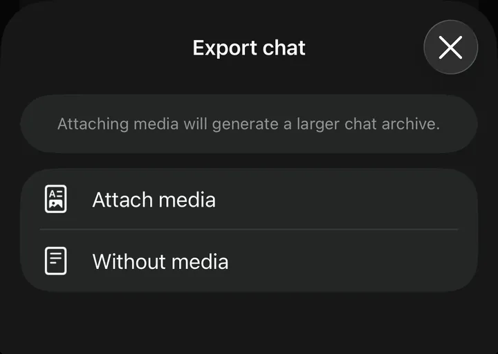
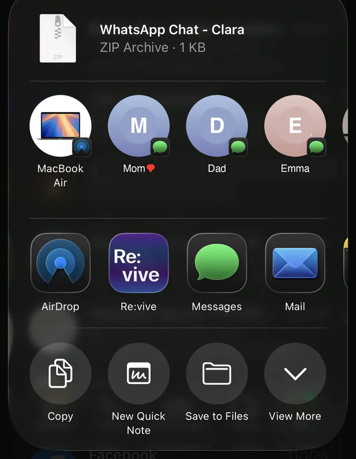

Tudo começa com uma conversa que você já tem.
Exporte do WhatsApp, KakaoTalk ou LINE. Só o texto já basta.
Cada linha vira uma memória.
O que foi dito, de que jeito e quando.
Você pergunta, e a resposta vem.
O Re:vive encontra o momento real no histórico e responde com a voz da pessoa.
- 02/03/2024 08:12 - Mãe: Bom dia, meu amor ☀️ dormiu bem?
- 09/03/2024 12:10 - Mãe: Deixa o feijão de molho na noite anterior e põe uma folha de louro
- 09/03/2024 12:11 - Mãe: E no fim, alho dourado no óleo quente. Sua avó sempre fazia assim
- 23/03/2024 19:51 - Mãe: E não me vem com "tô bem", que eu conheço essa voz 😉
- 30/03/2024 22:06 - Mãe: Te amo. Dorme bem 🌙
Como funciona
Três passos. Sem cadastro.
-

Exporte a conversa
No WhatsApp, KakaoTalk ou LINE, exporte uma conversa individual. Sem mídia já basta.
-

Compartilhe com o Re:vive
Escolha o Re:vive no menu de compartilhar e diga qual dos dois é você.
-
Diga oi
Escreva como sempre escreveu. As frases, o ritmo e os emojis vêm do histórico de vocês.
Lê exportações do WhatsApp, KakaoTalk e LINE e gravações de tela do iMessage e de SMS. Responde em português, inglês, alemão, francês, espanhol, italiano, coreano e japonês.
Privacidade
Seu histórico fica no seu celular.
Todo o histórico
Conversas importadas, memórias e ajustes ficam salvos só no seu aparelho. Não há conta para criar.
Só o que a resposta precisa
As respostas são escritas pela IA avançada, que pede sua permissão na primeira mensagem. Cada resposta envia sua mensagem e alguns trechos relacionados, nunca o histórico inteiro. Nada fica guardado no nosso servidor nem é usado para treinamento. Em celulares compatíveis, você pode escolher a IA no aparelho e manter tudo no celular.